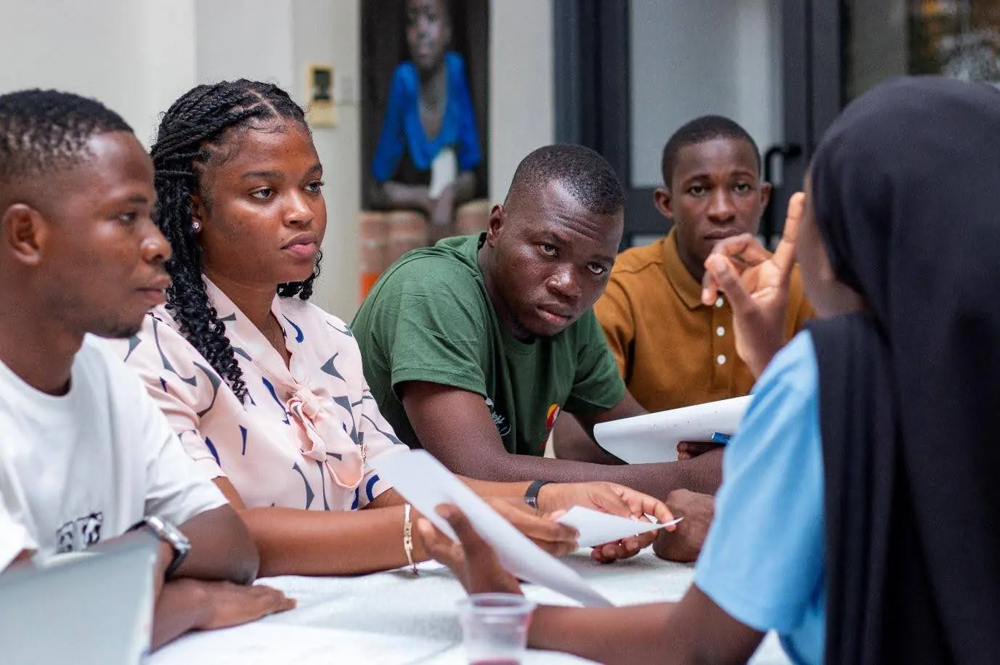
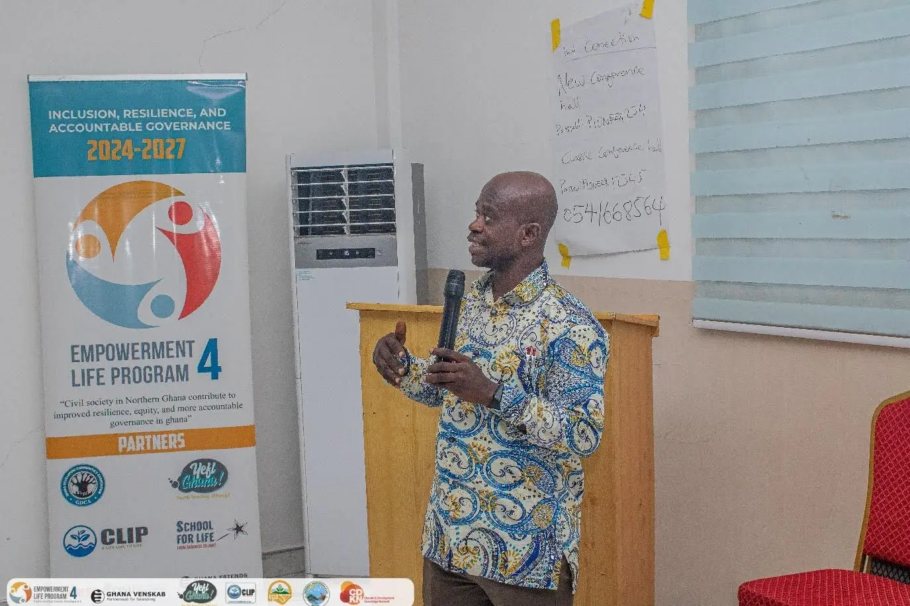
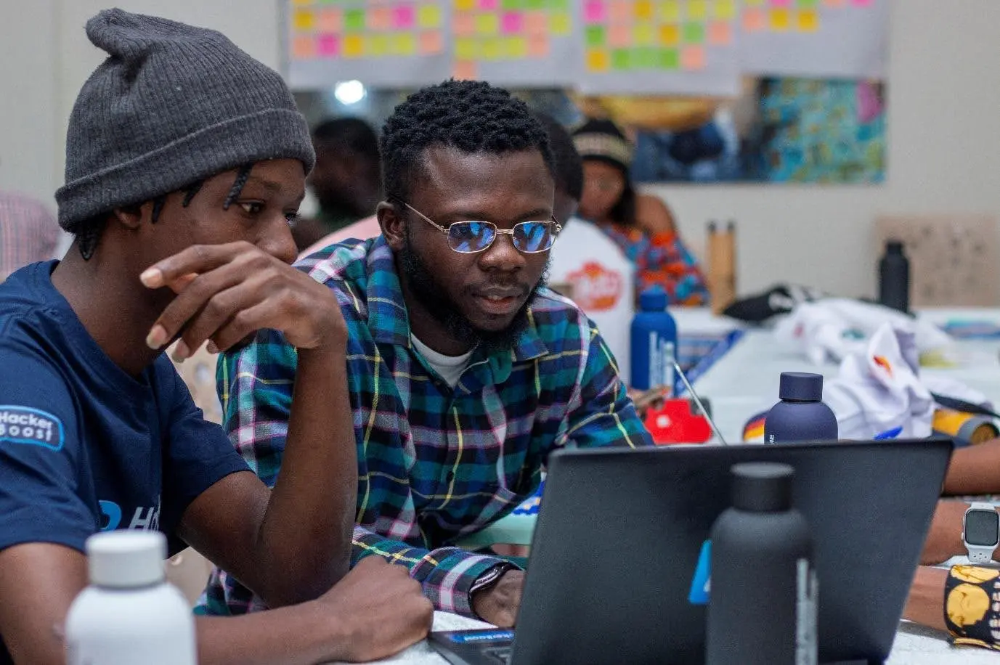
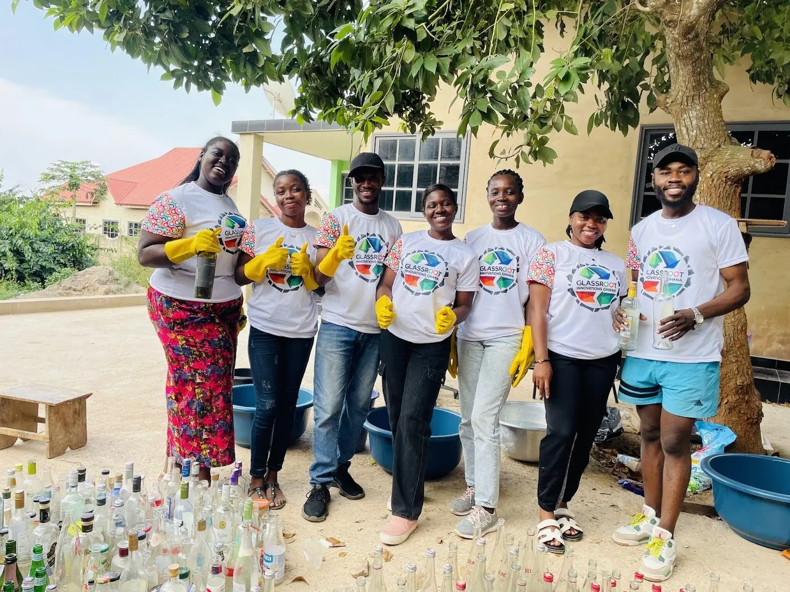
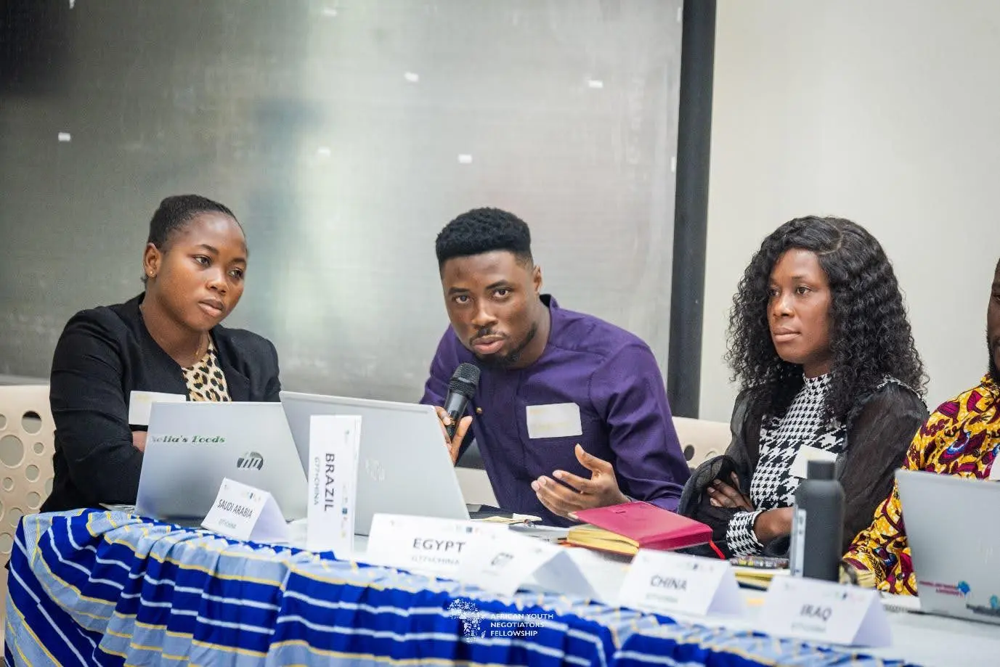
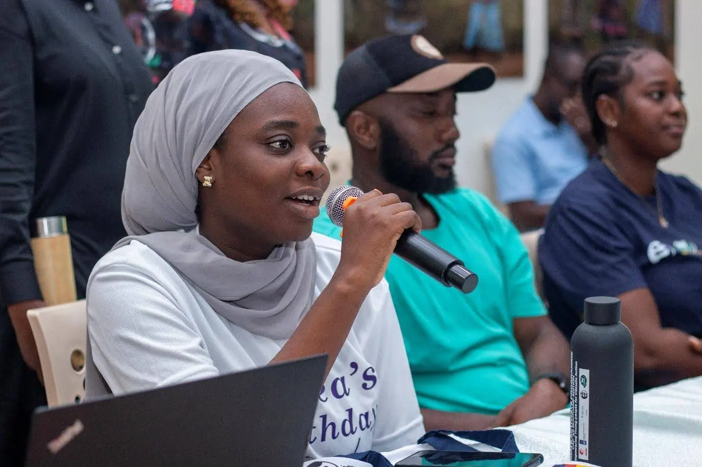

BTS blogs
Stories That Bring Evidence to Life
Reporting, programme learning and field reflections from across our work.
Showing all 7 stories

Climate · June 2026
What Heat Stole From Us
How rising temperatures are reshaping everyday life in Ghana.
Read the field note
Adaptation · April 2023
Building Youth Leadership on Nature-Based Solutions
Focused learning for ecosystem-based climate resilience.
Read article
Policy · May 2024
Strengthening Youth Voices in Climate Policy
Regional capacity building for evidence-led advocacy.
Read article
Innovation · June 2024
Co-Creating Youth MEL Systems
Practical tools to understand youth climate impact.
Read article
Youth · July 2025
Strengthening Grassroots Climate Action
Helping locally rooted ideas become sustainable projects.
Read article
Youth · September 2025
Preparing Youth Voices for Global Climate Dialogue
Pre-COP engagement grounded in evidence and place.
Read article
Journalism · October 2023
Amplifying Climate Stories Across Borders
Editorial support in Ghana, Nigeria and Liberia.
Read article